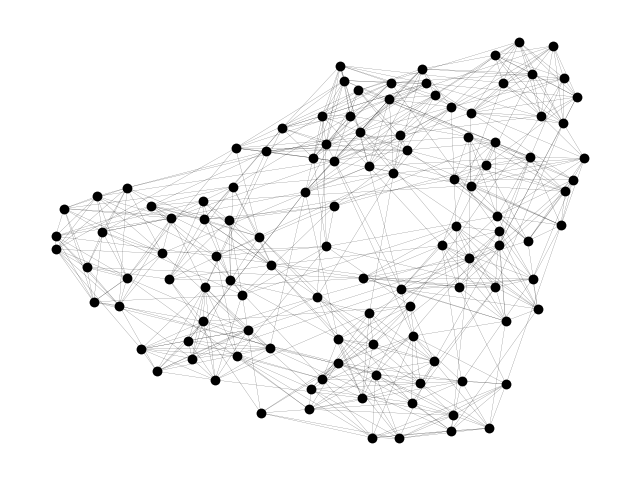

Football¶
Load football network in GML format and compute some network statistcs.
Shows how to download GML graph in a zipped file, unpack it, and load into a NetworkX graph.
Requires Internet connection to download the URL http://www-personal.umich.edu/~mejn/netdata/football.zip
Out:
The file football.gml contains the network of American football games
between Division IA colleges during regular season Fall 2000, as compiled
by M. Girvan and M. Newman. The nodes have values that indicate to which
conferences they belong. The values are as follows:
0 = Atlantic Coast
1 = Big East
2 = Big Ten
3 = Big Twelve
4 = Conference USA
5 = Independents
6 = Mid-American
7 = Mountain West
8 = Pacific Ten
9 = Southeastern
10 = Sun Belt
11 = Western Athletic
If you make use of these data, please cite M. Girvan and M. E. J. Newman,
Community structure in social and biological networks,
Proc. Natl. Acad. Sci. USA 99, 7821-7826 (2002).
Correction: Two edges were erroneously duplicated in this data set, and
have been removed (21 SEP 2014)
Mississippi 11
OregonState 10
NotreDame 11
Wyoming 11
Minnesota 11
Illinois 11
Kent 10
Toledo 9
Indiana 11
TexasChristian 11
Texas 11
BostonCollege 11
MississippiState 11
Tulsa 12
Kansas 10
SouthernMethodist 12
Connecticut 7
Tulane 11
PennState 12
FresnoState 11
Clemson 10
LouisianaState 10
CentralFlorida 8
Cincinnati 11
Missouri 10
Washington 11
OklahomaState 10
Marshall 10
IowaState 11
Army 11
LouisianaTech 10
AlabamaBirmingham 10
UCLA 11
MiddleTennesseeState 9
Maryland 11
Rice 11
SanJoseState 11
NorthCarolinaState 11
Arizona 11
Iowa 12
Pittsburgh 11
Michigan 11
Stanford 11
Oregon 11
Syracuse 11
SouthernCalifornia 12
Northwestern 11
SanDiegoState 11
Florida 11
BowlingGreenState 11
NewMexicoState 11
Baylor 10
MichiganState 11
Ohio 10
Buffalo 11
SouthernMississippi 10
WashingtonState 11
BoiseState 9
WakeForest 10
NorthernIllinois 10
KansasState 12
WesternMichigan 10
Navy 11
VirginiaTech 11
UtahState 9
Oklahoma 11
GeorgiaTech 11
Louisville 10
Arkansas 10
Temple 11
BallState 10
Vanderbilt 11
LouisianaLafayette 8
California 11
ColoradoState 10
Akron 11
Memphis 11
Georgia 10
TexasA&M 11
FloridaState 12
Rutgers 10
NevadaLasVegas 12
Duke 11
LouisianaMonroe 8
Colorado 11
ArizonaState 11
BrighamYoung 12
MiamiOhio 11
Auburn 11
Nevada 12
ArkansasState 10
EasternMichigan 11
SouthCarolina 11
MiamiFlorida 10
Idaho 9
OhioState 11
Utah 11
Virginia 10
TexasElPaso 11
TexasTech 12
NewMexico 11
CentralMichigan 11
Purdue 11
EastCarolina 11
NorthCarolina 11
Hawaii 11
Kentucky 10
Nebraska 11
WestVirginia 11
Wisconsin 12
Alabama 11
Houston 11
NorthTexas 10
AirForce 10
Tennessee 11
# Author: Aric Hagberg (hagberg@lanl.gov)
# Copyright (C) 2007-2017 by
# Aric Hagberg <hagberg@lanl.gov>
# Dan Schult <dschult@colgate.edu>
# Pieter Swart <swart@lanl.gov>
# All rights reserved.
# BSD license.
try: # Python 3.x
import urllib.request as urllib
except ImportError: # Python 2.x
import urllib
import io
import zipfile
import matplotlib.pyplot as plt
import networkx as nx
url = "http://www-personal.umich.edu/~mejn/netdata/football.zip"
sock = urllib.urlopen(url) # open URL
s = io.BytesIO(sock.read()) # read into BytesIO "file"
sock.close()
zf = zipfile.ZipFile(s) # zipfile object
txt = zf.read('football.txt').decode() # read info file
gml = zf.read('football.gml').decode() # read gml data
# throw away bogus first line with # from mejn files
gml = gml.split('\n')[1:]
G = nx.parse_gml(gml) # parse gml data
print(txt)
# print degree for each team - number of games
for n, d in G.degree():
print('%s %d' % (n, d))
options = {
'node_color': 'black',
'node_size': 50,
'line_color': 'grey',
'linewidths': 0,
'width': 0.1,
}
nx.draw(G, **options)
plt.show()
Total running time of the script: ( 0 minutes 0.301 seconds)